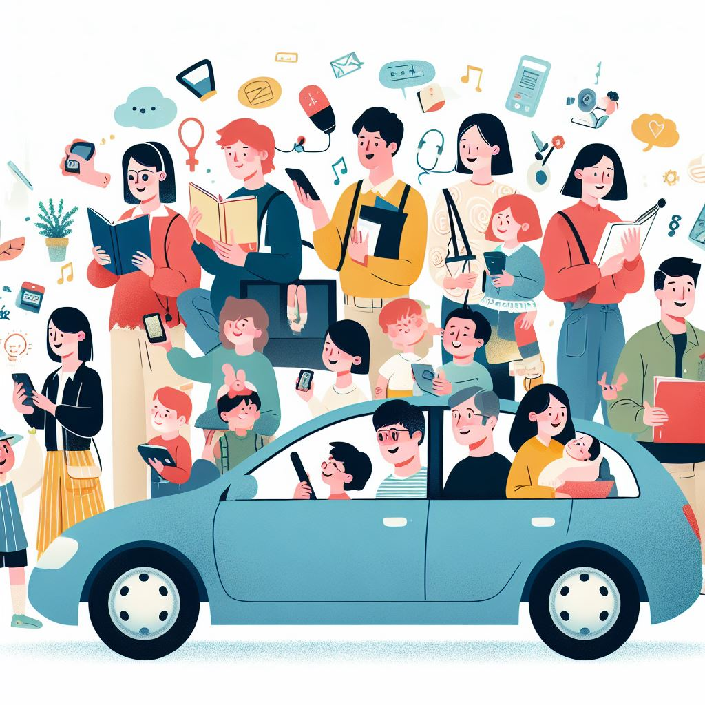
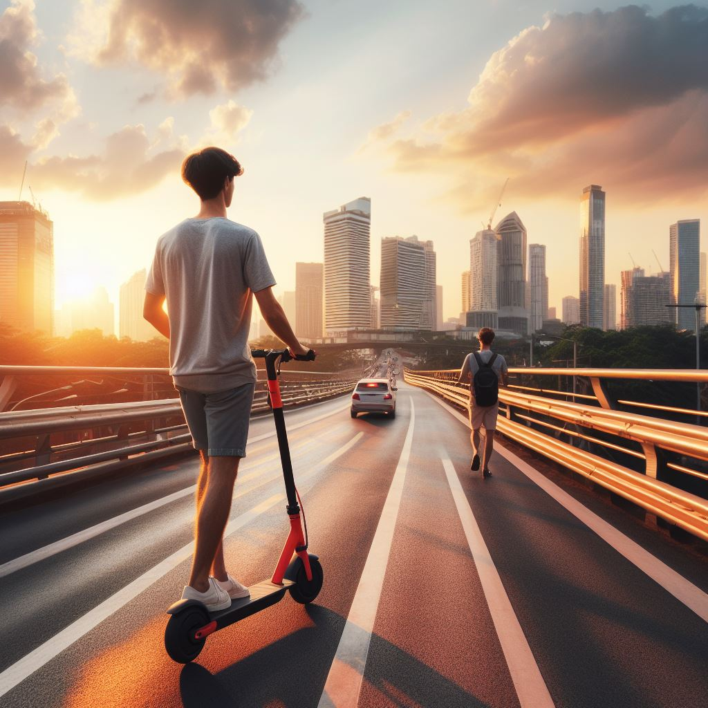
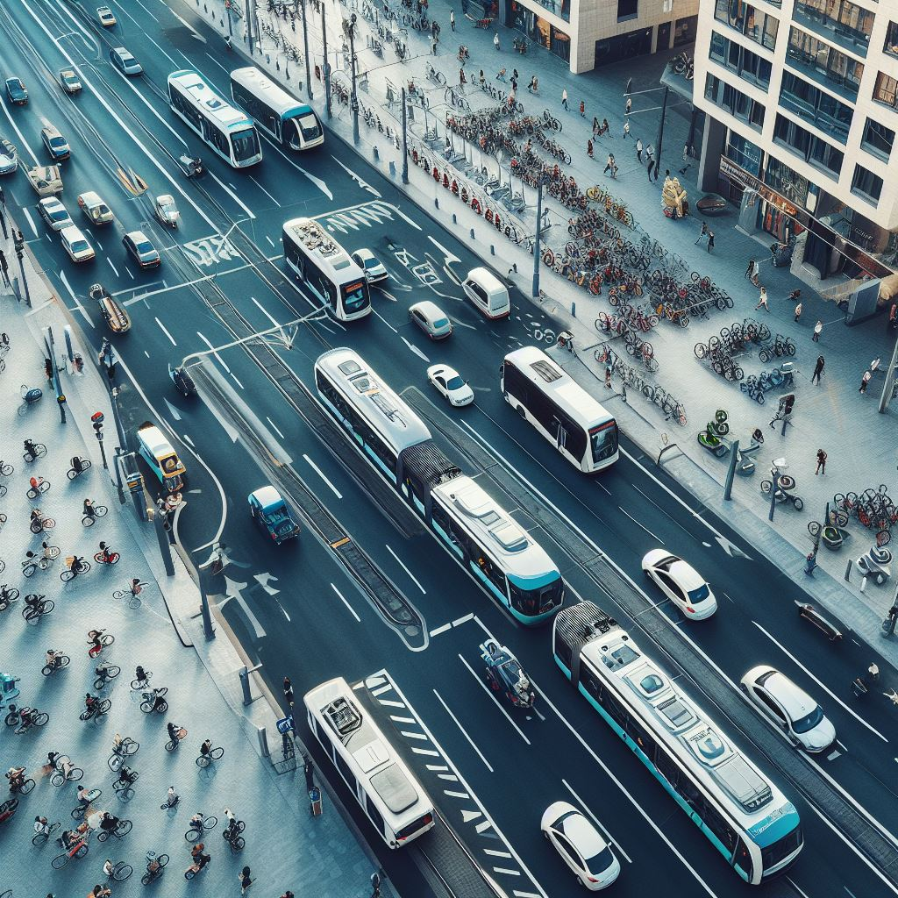
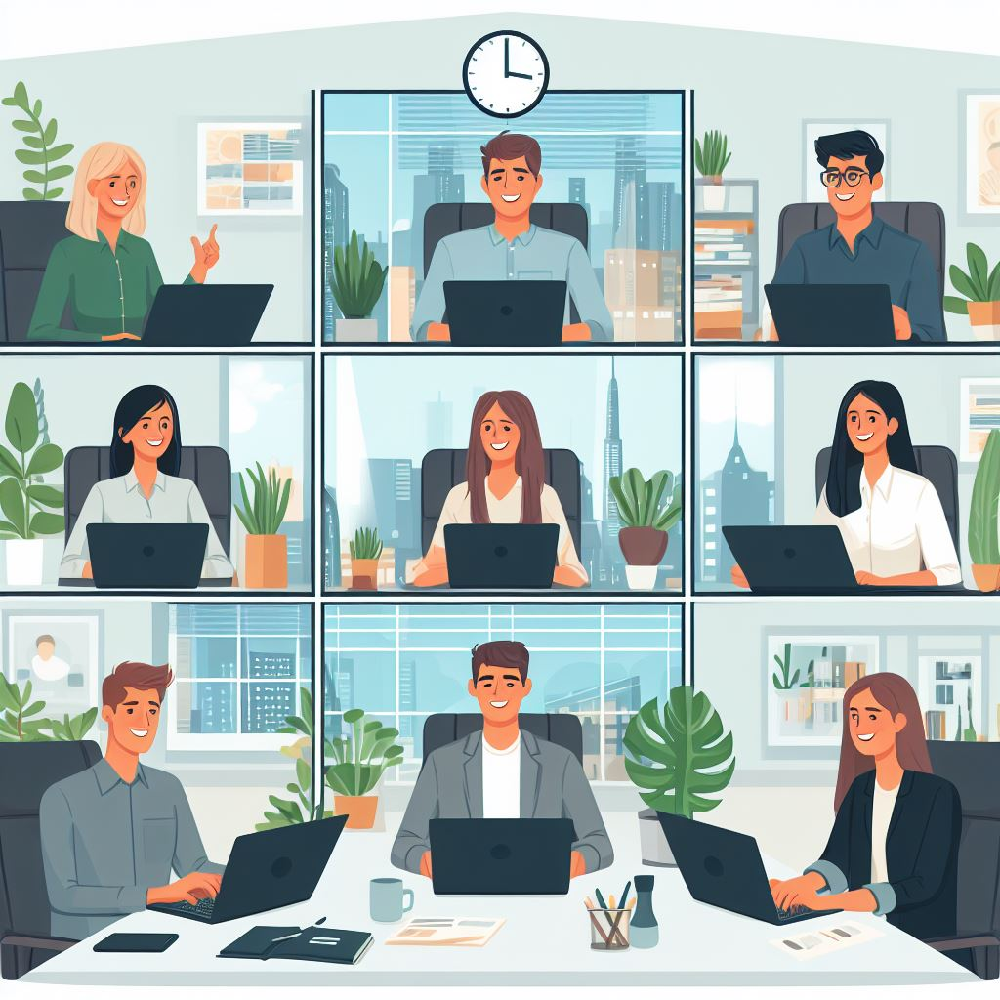
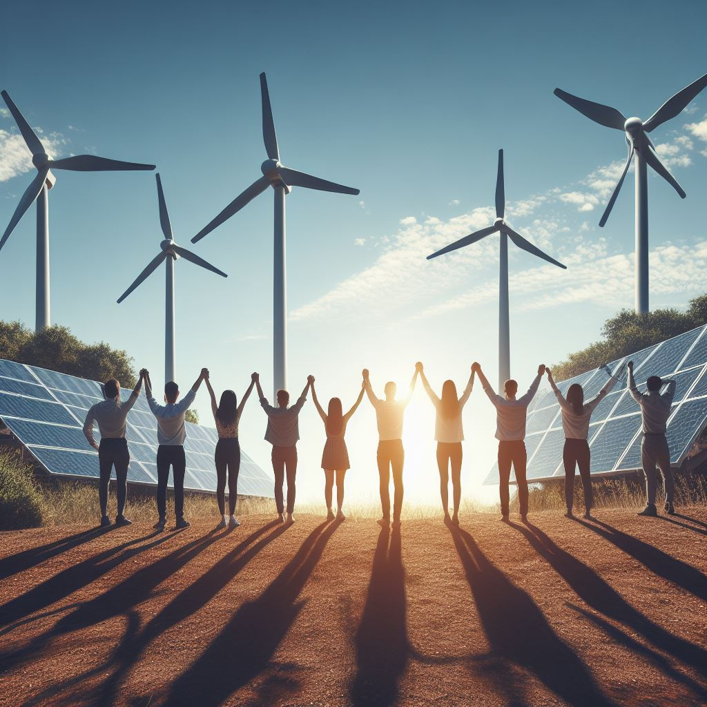

Intérêt pour le financement d’un mode de transport écologique : La moitié des répondants (2 sur 5) se disent intéressés par des solutions de financement pour l’achat d’un mode de transport plus écologique.
Analyse
Parmi les options proposées, les plus plébiscitées sont les transports en commun (4 sur 5) et les vélos électriques (2 sur 5).
Les critères les plus importants pour choisir un mode de transport écologique sont le coût, l’autonomie et la facilité d’utilisation (4 sur 5 chacun).
Avantages recherchés dans un mode de transport écologique : Tous les répondants (5 sur 5) citent la réduction des émissions de CO2 comme un avantage recherché dans un mode de transport écologique. D’autres avantages mentionnés sont l’amélioration de la qualité de l’air, l’impact positif sur la santé et le bien-être, et les économies sur les coûts de carburant (3 sur 5 chacun).
Informations souhaitées concernant le financement d’un mode de transport écologique : Les informations les plus demandées concernant le financement d’un mode de transport écologique sont les conditions de remboursement (5 sur 5) et les avantages spécifiques pour les utilisateurs de modes de transport écologiques (4 sur 5). Une seule personne a exprimé un besoin spécifique, qui est une aide financière.
Solutions
Covoiturage
Déplacez vous avec vos collègues ! Le covoiturage permet de réduire le nombre de véhicules sur la route et donc les émissions de CO2. Vous pouvez aussi financer une partie du coût du carburant ou des places de parking réservées aux covoitureurs.
Nous vous proposerons le meilleur service :
Vous pouvez proposer à vos employés des modes de déplacement doux et écologiques comme la trottinette ou le vélo électrique. Ces engins sont pratiques, rapides et peu encombrants. Vous pouvez les mettre à disposition gratuitement ou à un tarif préférentiel, et prévoir des places de parking sécurisées et des bornes de recharge.
Nous vous proposerons le meilleur service :
Trotinette / Vélo
Transports en commun
Vous pouvez inciter vos employés à utiliser les transports en commun (bus, tram, métro, train) pour se rendre au travail. Cela réduit également la pollution et le trafic routier. Vous pouvez prendre en charge une partie ou la totalité de l’abonnement aux transports en commun ou offrir des primes aux employés qui les utilisent régulièrement.
Nous vous proposerons le meilleur service :
Vous pouvez favoriser le télétravail et les réunions à distance pour vos employés qui n’ont pas besoin d’être présents physiquement au bureau. Cela leur évite de se déplacer et de consommer de l’énergie. Vous pouvez leur fournir du matériel informatique adapté et des logiciels de visioconférence efficaces.
Nous vous proposerons le meilleur service :
Télétravail / réunion à distance
Énergie renouvelables
Vous pouvez investir dans des sources d’énergie renouvelable comme le solaire, l’éolien ou la biomasse pour alimenter votre entreprise. Cela réduit votre dépendance aux énergies fossiles et votre facture énergétique. Vous pouvez aussi recycler vos déchets organiques ou plastiques pour les transformer en biogaz ou en biocarburant.
Nous vous proposerons le meilleur service :